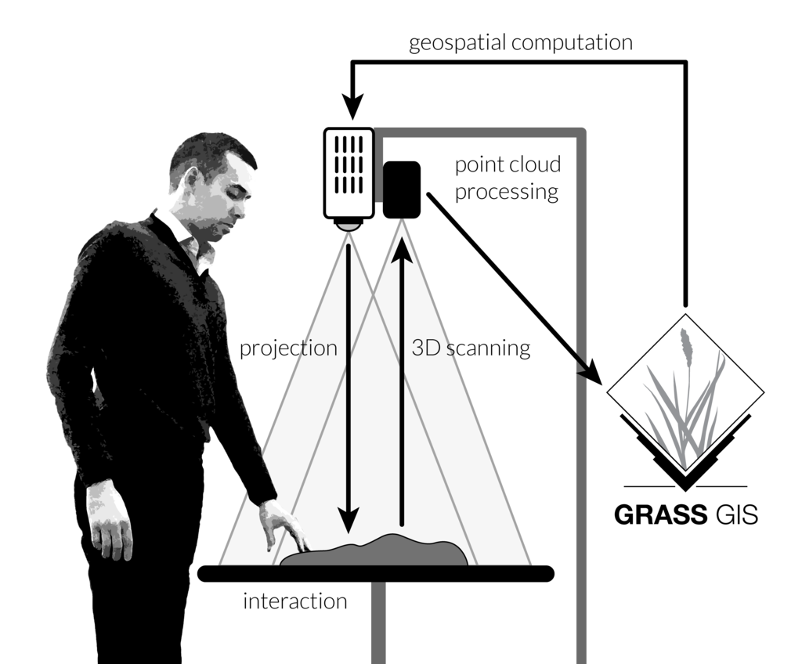

GRASS GIS as an open source innovation platform:
from dynamic visualizations to collaborative tangible modeling
Helena Mitasova, Anna Petrasova, Vaclav Petras, and Brandan Harmon
September 14-16, 2016
myoutline
- 80s video: GRASS for land management
- least cost path flowrouting 1991 >> SRTM, lidar
- MD interp, dynamic visualization 1993 >>
- duality of particles and fields 2000
- geomorphons and landex
- space time cube
- Tangible interface
- geoforall
- add year, GRASS version, paper, autocarto as citation footnote
Maps go digital with GRASS
Year 1987: Let William Shatner do the introduction
GRASS GIS for geospatial research
grass.osgeo.org
- general purpose GIS with wxPython GUI
- backend processing for QGIS, R statistics, WebGIS
- powerful 2D/3D raster, imagery and vector processing
- single integrated software with 30 years of development
GRASS GIS and innovation
- GRASS has long history - known as a reliable geospatial number cruncher (Neteler 2014)
- Developed as component of research projects - innovation through research
- Many historically innovative tools serve today
Watersheds
- First worldwide map of watersheds?
- Unique least cost path algorithm implemented in 1991
- Updated for massive data sets - proving its value with SRTM and lidar DEMs
TODO Panama? Lidar? cite Chuck, metz

Multivariate splines with analysis
- w = a + sumR^d(r), where d=2,3,4, r=(x_i), i=1,2,3
- simulatenous analysis of geometry: gradients, curvatures
- tuneable level of detail, geometry preserving smoothing

CITE
Dynamic volume modeling
Groundwater pollution plume from 10 years of well monitoring data

CITE
Dynamic Water and Sediment flow


Duality of particles and fields
Path sampling method for flow continuity equations


Space-Time Framework: Analysis
- Space-time 2D,3D raster and vector datatypes
- Time series datasets managed in temporal database
- New modules: query, aggregation, conversion, statistics, gap filling
Gebbert, S., Pebesma, E., 2014. TGRASS: A temporal GIS for field based environmental modeling.
Environmental Modelling & Software 53, 1-12.
MODIS land surface temperature
- 14 years of 4-times per day data (14x1440 maps) for entire Europe at 250m resolution
- advanced statistical methods used to fill no-data areas and enhance resolution
- multivariate regression including elevation, solar angle, annual precipitation

EuroLST: http://gis.cri.fmach.it/eurolst/, Metz, Rocchini, Neteler, 2014: Rem Sens, 6(5): 3822-3840
Lidar time series
- core, envelope, homes lost and built
LCP for linear features
- dune ridge and toe
- channels in a cave
DEM time series visualization:
Jockey's Ridge migration 1974 - 2012


Space-Time Cube visualization:
Jockey's Ridge 16m, 20m contour evolution isosurfaces


Interactive 270 degree visualization
Jockey's Ridge visualization in the Hunt Library teaching and visualization laboratory

Space time cube for topography
Stream bank erosion from terrestrial lidar
UAS DSM and water flow modeling
- flight analysis
- lidar + UAS fusion
- DSM of tilled fields at NCSU Lake Wheeler experimental farms
- Simulated surface water depth captures flow redirection by tillage


On-line geospatial analytics:
Geomorphons
- Basic landforms extracted for the entire US
- Interactive search of similar landuse patterns
- Spatial Informatics Laboratory, University of Cincinnati
- http://sil.uc.edu/

Tangible landscape
link to webinar and book

Why Tangible Interfaces for GIS?
- Interaction through mouse, keyboard and display can be tedious
- Manipulating 3D computer models requires specialized software and training, restricts creativity
- Collaboration is limited as typically only one user at a time can navigate and modify models.


Tangible Landscape: real-time coupling with GIS
With Tangible Landscape you can hold a GIS in your hands - feeling the shape of the earth, sculpting its topography, and directing the flow of water.
How it works

Tangible Landscape couples a digital and a physical model through a continuous cycle of 3D scanning, geospatial modeling, and projection
Interactions

| surface
| points
| lines
| areas
|
3D soil moisture exploration


Tangible Landscape + Immersive Virtual Reality
Coupling with contributed modules
pyGRASS, R,
Dam breach, overland flow (several modules)
NCSU Geoforall lab
geospatial.ncsu.edu/osgeorel/
- Member of Geo4all initiative and NA leading lab
- GRASS GIS development, courses, research projects
- Tangible Landscape: tangible-landscape.github.io
NCSU Geoforall lab
geospatial.ncsu.edu/osgeorel/
map 2011 and now
challenge for open source cartography - we need a map that fulfills cartographic standards